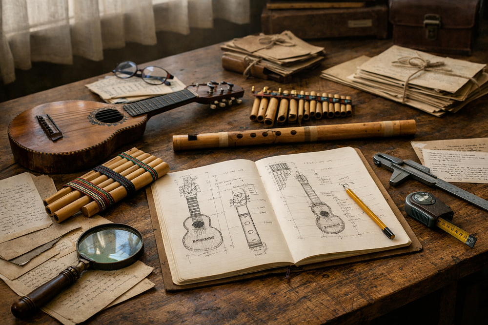
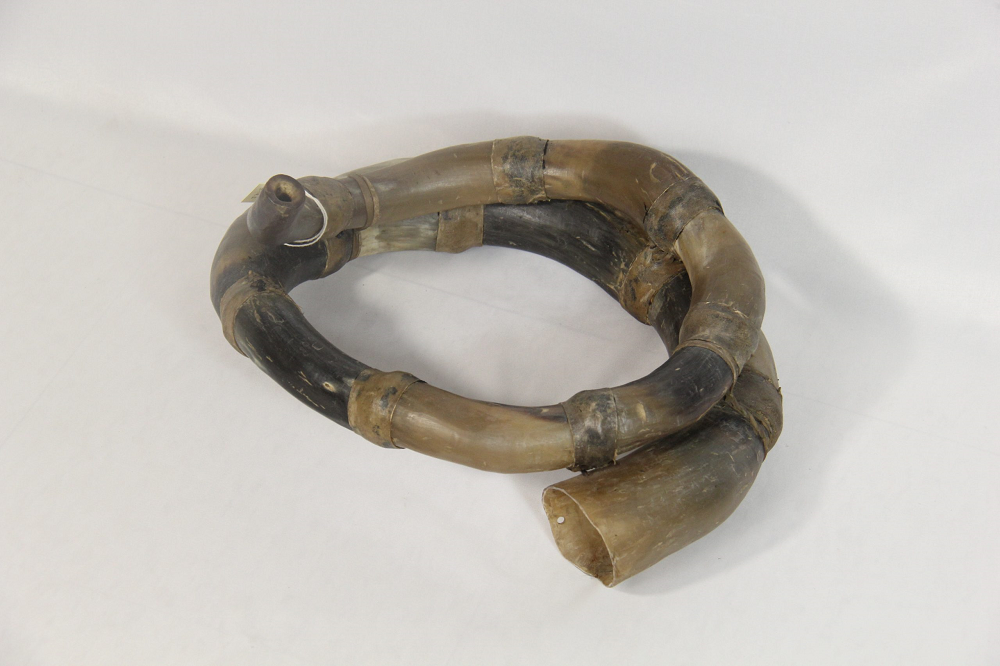
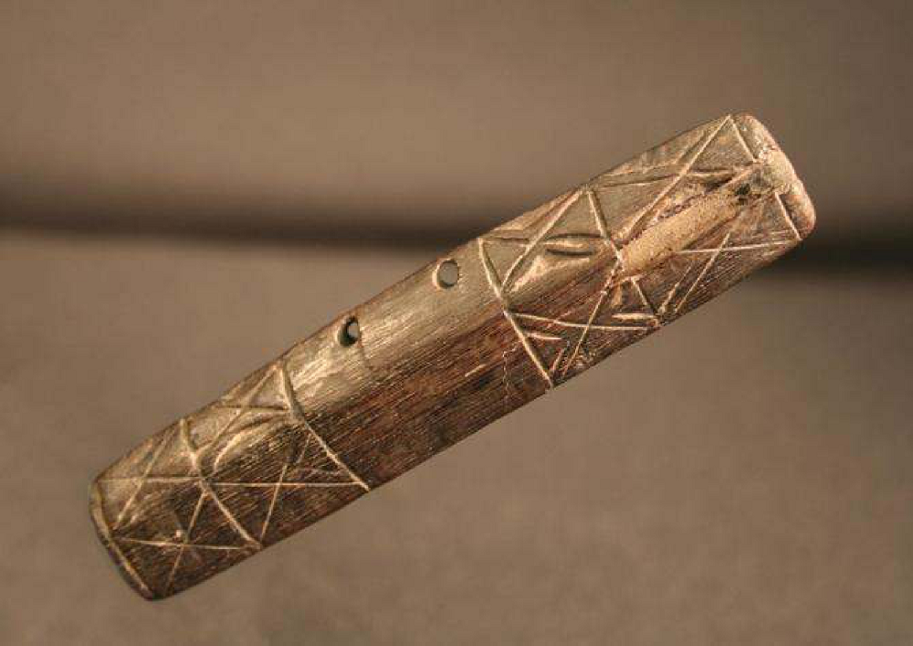

Bienvenida

Instrumentarium es una plataforma de investigación independiente dedicada al estudio y la documentación de instrumentos musicales, con especial atención a los instrumentos tradicionales de América Latina. El proyecto aborda los instrumentos como sistemas de conocimiento y objetos documentales; no solo como artefactos sonoros, sino como entidades materiales que encarnan historias de creación, territorios ecológicos, memoria cultural, identidades y epistemologías.
A partir de perspectivas de la organología / (etno)musicología, la museología, la bibliotecología y las ciencias de la información, la archivística y la teoría documental, Instrumentarium examina cómo se entienden, construyen, tocan, clasifican, describen, registran y preservan los instrumentos, y cómo tales procesos configuran la memoria sobre las tradiciones musicales.
El sitio publica notas de investigación, ensayos, artículos, libros y formas experimentales de documentación dedicadas al estudio de los instrumentos musicales y el patrimonio sonoro. El contenido del sitio puede explorarse a través de los menús de navegación en la parte superior de la página o mediante las secciones listadas en la barra lateral.
Blog Bitácora de un músico | El apunte más reciente

Hathpang y mbiké
| Publicado el 29 de abril de 2026 |
El hathpang y el mbiké ocupan un lugar incierto dentro de la historia musical indígena sudamericana. Las descripciones escasas, la documentación fragmentaria y la inestabilidad material de los instrumentos dificultan su clasificación histórica, incluso cuando su estructura organológica resulta notablemente clara. Este texto examina estos violines monocordes del Chaco no como curiosidades aisladas, sino como instrumentos que exponen los límites de los mapas instrumentales simplificados y la fragilidad del registro histórico en torno a los cordófonos indígenas de las Américas.
Blog Bitácora de un músico | La nota más reciente

Tortugas sonoras de Venezuela, Brasil y las Guayanas
| Publicado el 29 de abril de 2026 |
Los caparazones de tortuga resuenan en Venezuela, Brasil y las Guayanas, donde distintos pueblos indígenas los transforman en idiófonos de fricción vinculados a conjuntos de zampoñas, danzas y prácticas ceremoniales. Frotados con la mano, con ramas o con cera vegetal, estos cuerpos sonoros aparecen integrados en formas musicales locales que sobreviven de manera fragmentaria y desigual.
Artículos y compilaciones
El erquencho y otros clarinetes idioglóticos
| Publicado el 11 de abril de 2025 |
Cuadernos de investigación musical, 17, enero-junio 2023, pp. 150-171.
En su trabajo de 1935 sobre instrumentos musicales entre los pueblos indígenas de América del Sur, Karl Gustav Izikowitz señaló la existencia de un grupo de clarinetes sin orificios de digitación e idioglóticos que denominó de "tipo meridional". Curiosamente, no incluyó en su lista a uno de los pocos (sino el único) sobrevivientes actuales de esa familia organológica: el erque o erquencho, un aerófono construido e interpretado en el noroeste de Argentina y el sur de Bolivia. De estructura relativamente sencilla, produce un sonido entre ronco, chillón y gangoso, en una gama limitada de notas, lo cual no impide que sea muy popular en su área de procedencia. Desafortunadamente, fuera de ella es, aún hoy, un desconocido. El artículo ofrece una revisión de las principales características de una familia casi perdida, y de un artefacto sonoro bastante invisible y escasamente ejecutado fuera de sus contextos más tradicionales.
Todos los artículos y compilaciones
Libros y otras publicaciones

Los parientes africanos de la banda mocha del Chota
| Publicado el 11 de abril de 2025 |
2.ed.rev. Bogotá: Wayrachaki Editora, 2021.
El texto describe someramente cómo surge y cuáles son los componentes de la expresión musical afro-ecuatoriana conocida como "banda mocha", originaria del valle del Chota, en las estribaciones andinas del norte de Ecuador. A continuación se rastrea el uso del instrumento más característico de este tipo de bandas –la bocina de calabaza– en África central y oriental, especialmente en conjuntos que imitan con tales bocinas el sonido de bandas militares europeas. Finalmente, con los datos aportados y las coincidencias encontradas, se sugiere un vínculo entre la banda mocha y las agrupaciones africanas relevadas.